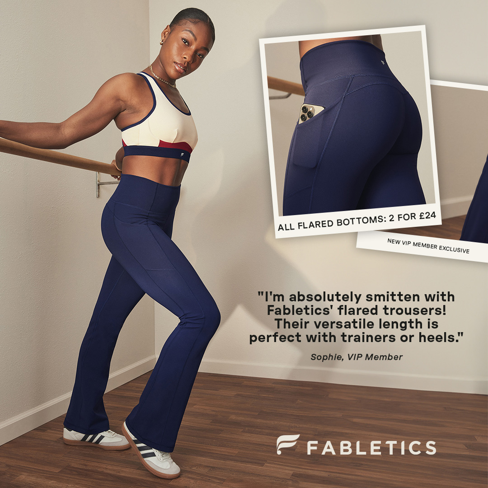
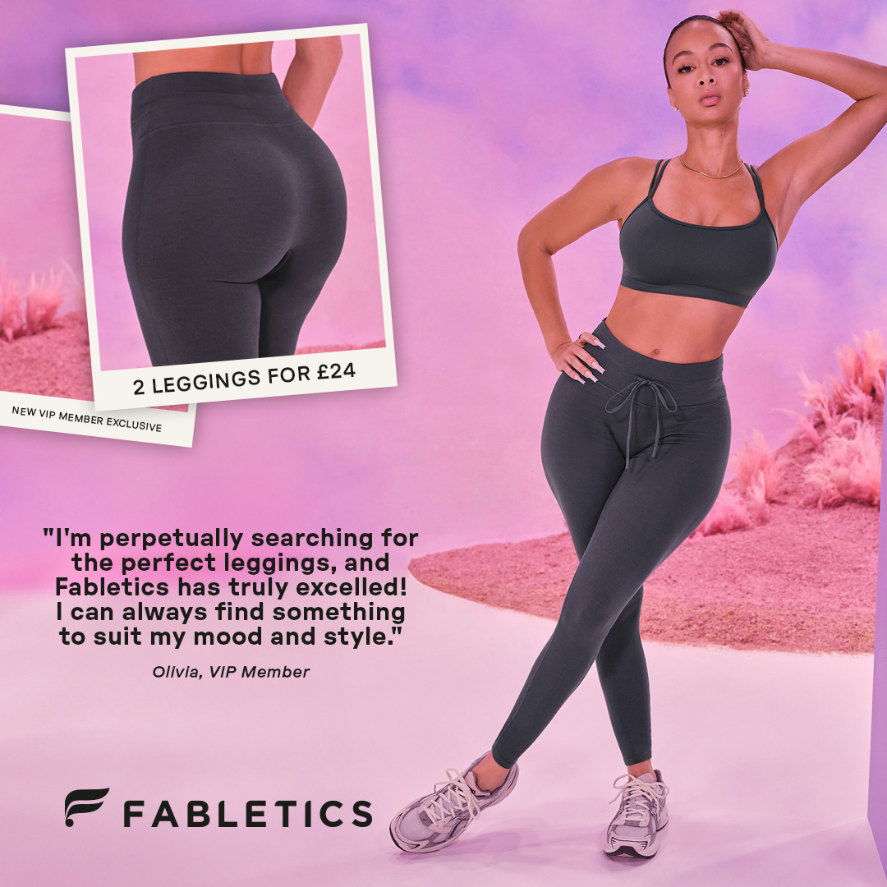
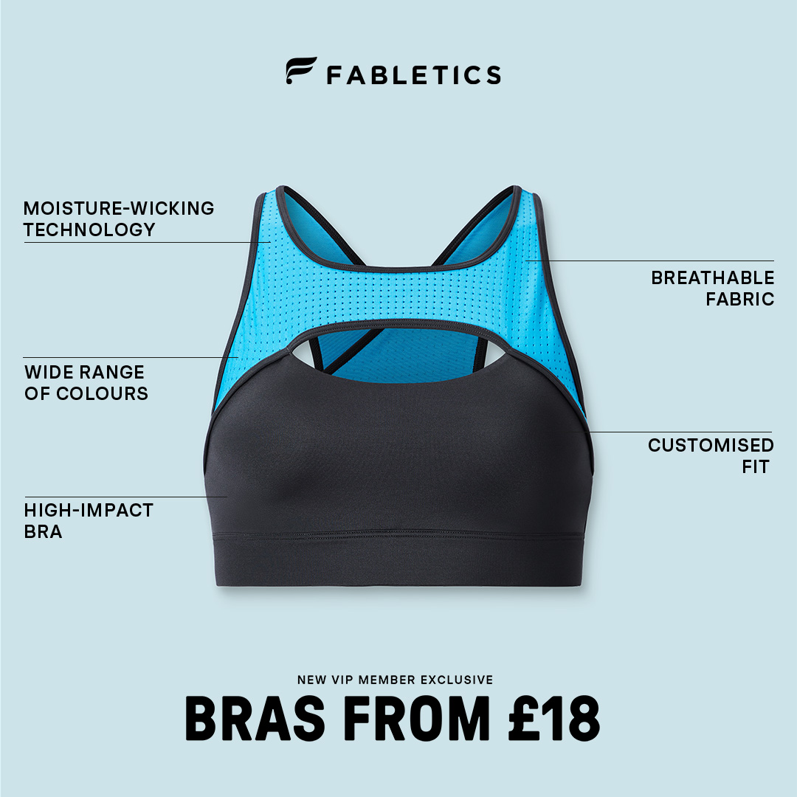
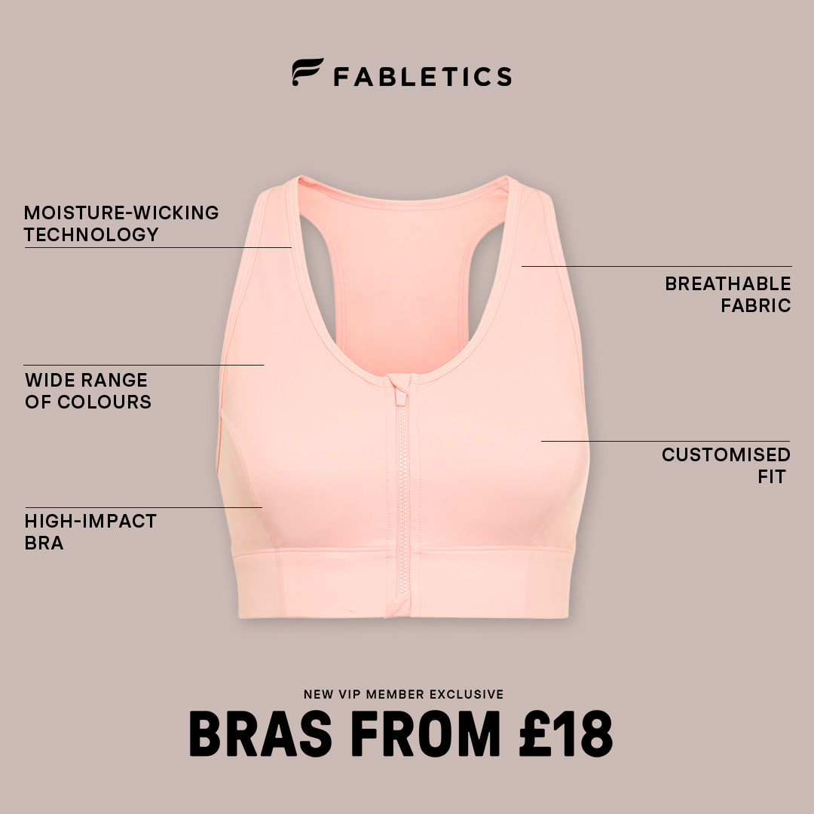
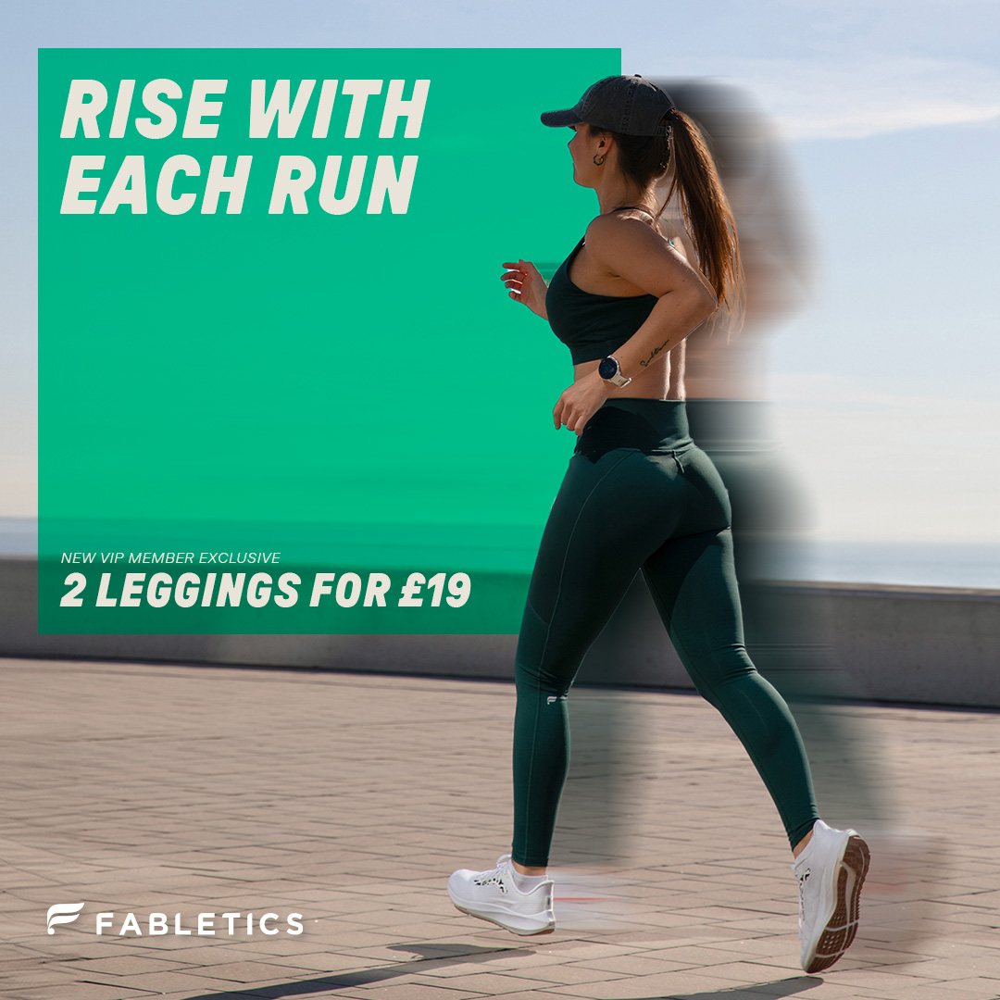
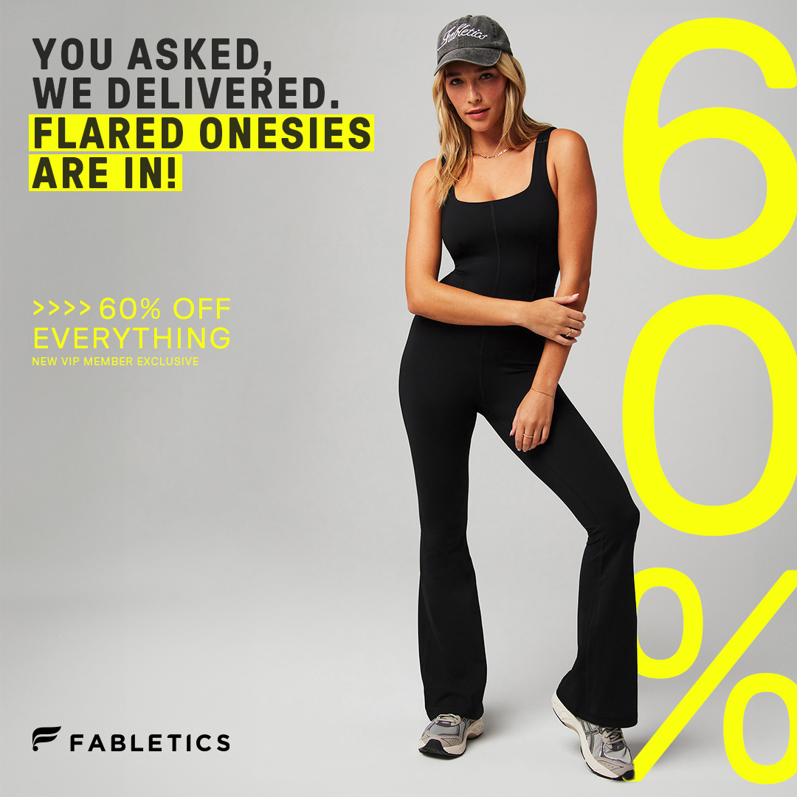
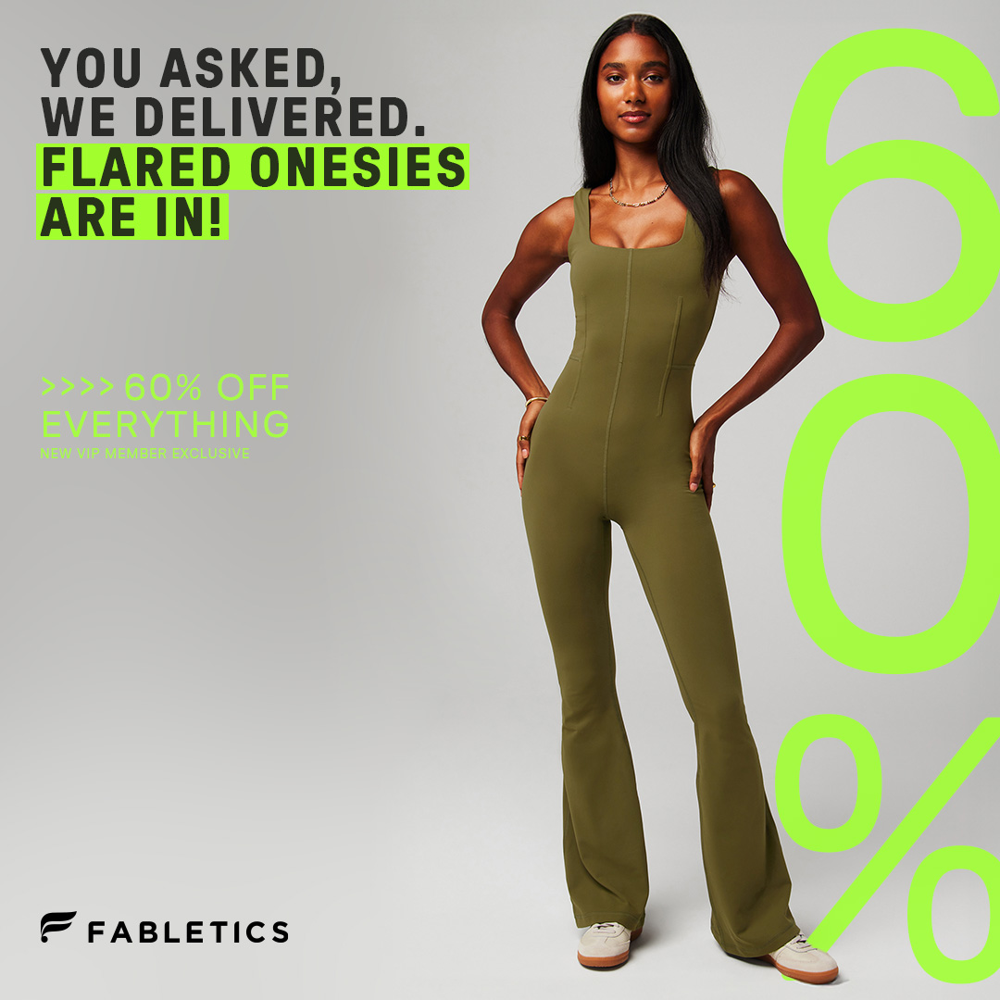

Fabletics
Trayectoria de 5 años como Senior Multimedia Designer dentro del equipo de Performance Marketing de Fabletics, marca global líder en el sector D2C y Activewear.
Producción integral de ecosistemas visuales para Meta, TikTok y YouTube, especializándome en piezas de vídeo de alto rendimiento y creatividades estáticas alineadas con la identidad premium de la marca.
Desarrollo de contenido estratégico enfocado en el modelo de suscripción VIP, optimizando la narrativa visual para guiar al usuario a través del funnel de conversión en múltiples mercados europeos.
Diseño basado en datos (Data-Driven Design), colaborando estrechamente con los equipos de Growth y CRM para iterar activos mediante A/B testing y maximizar el rendimiento de las campañas según el comportamiento del usuario.
Este periodo consolidó mi capacidad para gestionar la complejidad visual de una marca internacional, equilibrando el rigor estético con los objetivos comerciales más exigentes.
YouTube
Meta (estáticos)






